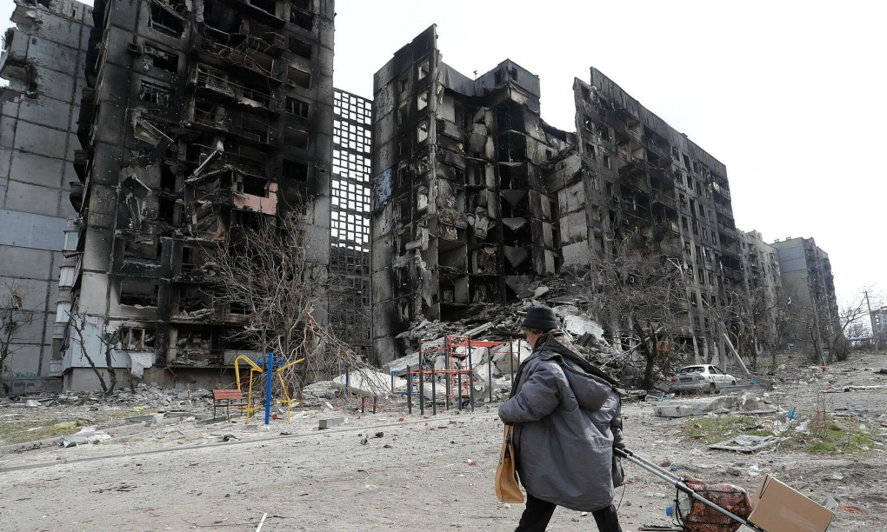

Thứ ba, 12/4/2022, 05:00 (GMT+7)
Tương lai vừa đánh vừa đàm trong xung đột Ukraine
Cả Moskva và Kiev đều không muốn từ bỏ nỗ lực ngoại giao để giải quyết xung đột, nhưng kết cục đàm phán sẽ tùy thuộc vào diễn biến chiến trường miền đông Ukraine.
Tổng thống Ukraine Volodymyr Zelensky hôm 9/4 thừa nhận "không còn lựa chọn nào khác" ngoài ngồi vào bàn đàm phán với Nga để chấm dứt xung đột, nhưng cũng khẳng định nước này đã sẵn sàng chuẩn bị cho những trận đánh lớn, mang tính quyết định ở miền đông.
Một ngày sau, Mykhailo Podolyak, cố vấn Tổng thống Ukraine, khẳng định quân đội nước này phải "thắng những trận lớn" ở Donbass để có vị thế đàm phán mạnh hơn trước khi cuộc gặp trực tiếp giữa ông Zelensky với người đồng cấp Nga Vladimir Putin có thể diễn ra.
Giới quan sát cho rằng quan điểm này của Kiev cho thấy hai bên chưa từ bỏ nỗ lực ngoại giao, nhưng toàn bộ quá trình đàm phán sẽ phụ thuộc rất lớn vào kết cục trận chiến lớn sắp nổ ra ở miền đông Ukraine. Theo Jonah Shepp, nhà phân tích chính trị quốc tế của Intelligencer, Nga dường như cũng đang đầu tư lớn cho trận đấu mang tính quyết định này.

Tổng thống Ukraine Volodymyr Zelensky tới thăm thị trấn Bucha, ngoại ô Kiev hôm 4/4. Ảnh: Reuters.
Các nguồn tin phương Tây cho hay ông Putin đã bổ nhiệm tướng Alexander Dvornikov, tư lệnh Quân khu miền Nam Nga, làm chỉ huy chiến dịch quân sự đặc biệt ở Ukraine trong giai đoạn mới. Tướng Dvornikov là người từng có kinh nghiệm chỉ huy lực lượng Nga tham chiến ở Syria và được kỳ vọng sẽ giúp thay đổi tình hình chiến trường, khi Moskva chuyển trọng tâm sang "giải phóng" Donbass.
Ảnh vệ tinh do công ty Mỹ Maxar Technologies công bố cũng cho thấy đoàn xe quân sự dài gần 13 km của Nga cũng đang di chuyển đến khu vực ngoại ô phía đông Kharkov, thành phố lực lượng Nga đã vây hãm hơn một tháng qua nhưng chưa thể kiểm soát.
Nhà phân tích Shepp cho rằng quyết định rút quân khỏi Kiev và các khu vực miền bắc Ukraine của quân đội Nga cùng những ngày giao tranh lắng dịu sau đó chỉ là "khoảng lặng trước cơn bão", khi Nga tập hợp lực lượng cho những đòn tấn công mạnh hơn ở miền đông.
"Trong khi miền bắc Ukraine tạm yên, cường độ xung đột có thể sẽ tăng lên ở các mặt trận khác trong những ngày tới. Để đẩy lùi đợt tấn công này của Nga, Ukraine sẽ cần thêm hỗ trợ từ phương Tây, một trong những yếu tố quan trọng định hình giai đoạn tiếp theo của cuộc chiến", Shepp viết.
Lầu Năm Góc gần đây công bố gói viện trợ quân sự mới trị giá 300 triệu USD cho Ukraine, gồm máy bay không người lái, xe bọc thép và các vũ khí khác. EU cũng tuyên bố sẽ hỗ trợ số vũ khí trị giá 543 triệu USD cho Ukraine trong vài ngày tới.
Thủ tướng Anh Boris Johnson hôm 9/4 bất ngờ tới thăm Kiev, cho biết London sẽ cung cấp cho Ukraine 120 xe bọc thép và hệ thống tên lửa chống hạm mới, bên cạnh các thiết bị quân sự hiện đại khác trị giá khoảng 130 triệu USD được công bố trước đó, gồm tên lửa phòng không Starstreak, 800 tên lửa chống tăng và nhiều vũ khí chính xác cao.
Mỹ và các đồng minh phương Tây cũng có thể tăng hỗ trợ Ukraine bằng cách tăng cường biện pháp trừng phạt đối với Nga.
Trong bối cảnh hai bên chưa tìm được tiếng nói chung trong đàm phán, trong khi các loại vũ khí hiện đại tiếp tục được bơm vào chiến trường, nguy cơ cuộc xung đột trong những ngày tới kéo dài dai dẳng với mức độ khốc liệt hơn là rất cao, theo Sarah Wheaton và Cristina Gallardo, hai nhà phân tích kỳ cựu của Politico.
Hai bên đều đang chờ đợi kết quả có lợi trên chiến trường miền đông, trong bối cảnh Nga chưa có dấu hiệu muốn sớm chấm dứt cuộc xung đột. Các nhà phân tích cho rằng quyết định dồn lực lượng trở lại Donbass của ông Putin không đồng nghĩa ông sẽ hài lòng với một thỏa thuận hòa bình mà cuối cùng mà chỉ giúp Moskva giành kiểm soát vùng lãnh thổ đó.
Bản thân ông Zelensky dường như cũng nhận ra điều này. "Chỉ có Tổng thống Putin mới có thể quyết định khi nào chiến sự chấm dứt", ông trả lời phỏng vấn tờ Bild của Đức hôm 9/4.
Câu hỏi đặt ra là liệu Tổng thống Putin có điều chỉnh các mục tiêu ở Ukraine hay không. Đại sứ Nga tại Mỹ Anatoly Antonov hôm 8/4 nêu các điều kiện chấm dứt xung đột với Ukraine, trong đó nhấn mạnh nước này phải "phi quân sự hóa, phi phát xít hóa, đảm bảo trạng thái trung lập, phi hạt nhân cũng như thừa nhận chủ quyền của Nga đối với Crimea và công nhận độc lập cho hai nước cộng hòa ở Donetsk, Lugansk".
Tổng thống Zelensky đã thừa nhận rằng gia nhập NATO là giấc mơ khó thành với Ukraine, nên đã chấp nhận từ bỏ tham vọng này để nỗ lực đàm phán với Nga. Ông cũng tuyên bố sẵn sàng đáp ứng các yêu cầu về trung lập, nhưng khẳng định sẽ không nhượng bộ về lãnh thổ.
Bởi vậy, các nhà phân tích cho rằng kết cục xung đột Ukraine phụ thuộc không chỉ vào tính toán "đi xa đến đâu" của Tổng thống Putin, mà còn vào mức độ nhượng bộ đến mức nào của ông Zelensky trên bàn đàm phán.
"Zelensky biết rằng ông có trách nhiệm bảo vệ người dân ngay cả khi điều đó đồng nghĩa phải nuốt viên thuốc đắng để chấm dứt đổ máu", Shepp viết, đồng nghĩa Kiev có thể phải từ bỏ các khu vực do phe ly khai kiểm soát ở Donbass nếu tình hình chiến trường ở đây không sớm ngã ngũ.

Một tòa nhà bị phá hủy sau giao tranh ở thành phố Mariupol, phía nam Ukraine hôm 3/4. Ảnh: Reuters.
Tổng thống Pháp Emmanuel Macron cho rằng khả năng đạt thỏa thuận hòa bình cho xung đột Ukraine chưa hết, dù hiện tại chưa rõ phương Tây và chính người dân Ukraine có thể chấp nhận bao nhiêu nhượng bộ của chính quyền ông Zelensky trước Nga.
Các nước Tây Âu đang mong muốn trở lại tình trạng bình thường về kinh tế, bởi các biện pháp trừng phạt cứng rắn không chỉ làm tổn hại riêng Nga. Chi phí sinh hoạt tăng có thể là mối đe dọa với nỗ lực tái tranh cử của ông Macron, trong khi Thủ tướng Đức Olaf Scholz cảnh báo cấm dầu và khí đốt của Nga sẽ gây ra suy thoái nghiêm trọng ở châu Âu.
"Tôi nghĩ sẽ có một thỏa thuận, nhưng giao tranh vẫn sẽ xảy ra quyết liệt khi hai bên đều cố gắng tìm kiếm đòn bẩy cho mình trên bàn đàm phán", tướng về hưu David Petraeus, cựu giám đốc CIA và từng chỉ huy các cuộc chiến của Mỹ ở Iraq, Afghanistan, nhận định.
Thanh Tâm (Theo Politico, Intelligencer, CBS)